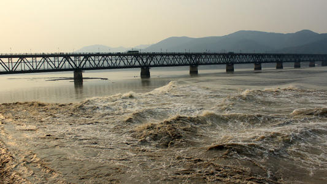

-
农历八月十六日至十八日，太阳、月球、地球几乎在一条直线上，所以这天海水受到的引潮力（月球、太阳或其他天体对地球上单位质量物体的引力和对地心单位质量物体的引力之差，或地球绕地-月（日）质心运动所产生的惯性离心力与月（日）引力的合力）最大。
天时
跟钱塘江口状似喇叭形有关。钱塘江南岸赭山以东近50万亩围垦大地像半岛似地挡住江口，使钱塘江赭山至外十二公里段酷似肚大口小的瓶子，潮水易进难退，杭州湾外口宽达100公里，到外十二工段仅宽几公里，江口东段河床又突然上升，滩高水浅，当大量潮水从钱塘江口涌进来时，由于江面迅速缩小，使潮水来不及均匀上升，就只好后浪推前浪，层层相叠。其次还跟钱塘江水下多沉沙有关，这些沉沙对潮流起阻挡和摩擦作用，使潮水前坡变陡，速度减缓，从而形成后浪赶前浪，一浪叠一浪涌。
地利
-
沿海一带常刮东南风，风向与潮水方向大体一致，助长了潮势。
风势

早在汉、魏、六朝时就已蔚成风气，至唐、宋时，此风更盛。相传农历8月18日，是潮神的生日，故潮峰最高。南宋朝廷曾经规定，这一天在钱塘江上校阅水师，以后相沿成习，八月十八逐渐成为观潮节。北宋诗人潘阆的《酒泉子》中写道：
长忆观潮，满郭人争江上望。来疑沧海尽成空，万面鼓声中。弄潮儿向涛头立，手把红旗旗不湿。别来几向梦中看，梦觉尚心寒。
这首诗便是当年“弄潮”与“观潮”活动的真实写照。
钱江潮排山倒海之势容易冲毁堤塘危害生命，海塘一旦出事，会影响到杭嘉湖、萧绍甬平原，关系到千家万户的身家性命。
标准堤塘上所留的出入口是堤塘检查和维护所需，丁字坝、盘头等是保护堤塘的建筑物，大堤临水侧的砼平台系堤塘结构的一部分，决非供人们观潮和嬉水之用。如果对钱江潮的特性、危害不了解，则要“一不当心，命丧钱江”。因此，在海塘上休憩、玩耍、纳凉时千万不要下堤，不要对堤上的警告、警示不管不顾，避免由于麻痹、疏忽而酿成被潮水吞走的悲剧。
根据钱塘江的涌潮特点，潮景壮观之处往往是危险之处，涌潮的推进速度及摧毁能力非血肉之躯所能抗衡。涌潮到来，人切莫与其争道，避免发生人被潮水冲走的伤亡事件。
观潮活动要选择安全区域或地段，服从观潮现场工作人员的指挥和管理，要注意沿江大堤上的警示标志，并严格遵守，按照划定的区域停车、观潮，不要到没有安全防护措施的堤塘附近，以及丁字坝或水上码头、护岸的盘头上观潮。不要越过防浪墙到河滩、丁字坝等上面去游玩、纳凉，更不要在江中游泳、洗澡。
在面临危险的情况下，不要惊惶失措，要迅速、有序地向安全地带撤退，并立即向周边的防潮巡逻人员或其他人呼救。撤离时，不要为了抢救财物而失去宝贵的自救时机。在万一落水或被潮水击打的情况下，要尽量抓住身边的固定物，防止被潮水卷走。周边人员在看到有人落水的紧急情况下，要迅速采取救援措施并立即发打110报警。